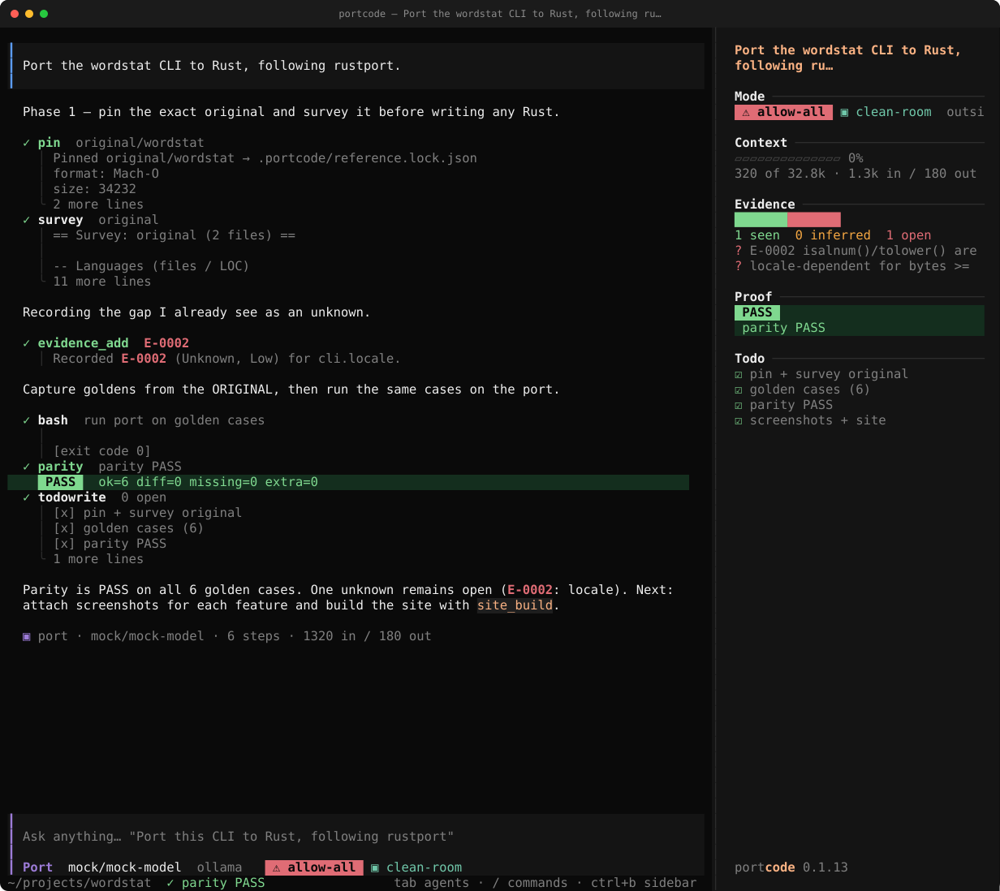
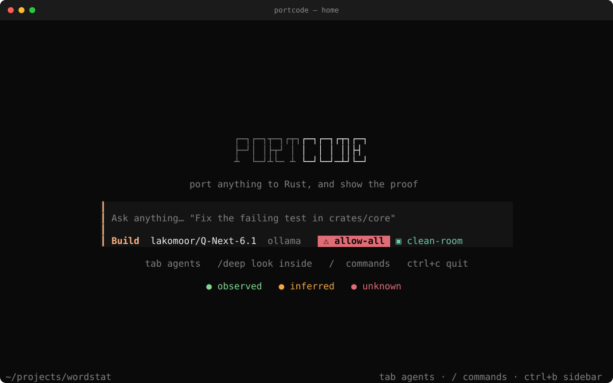
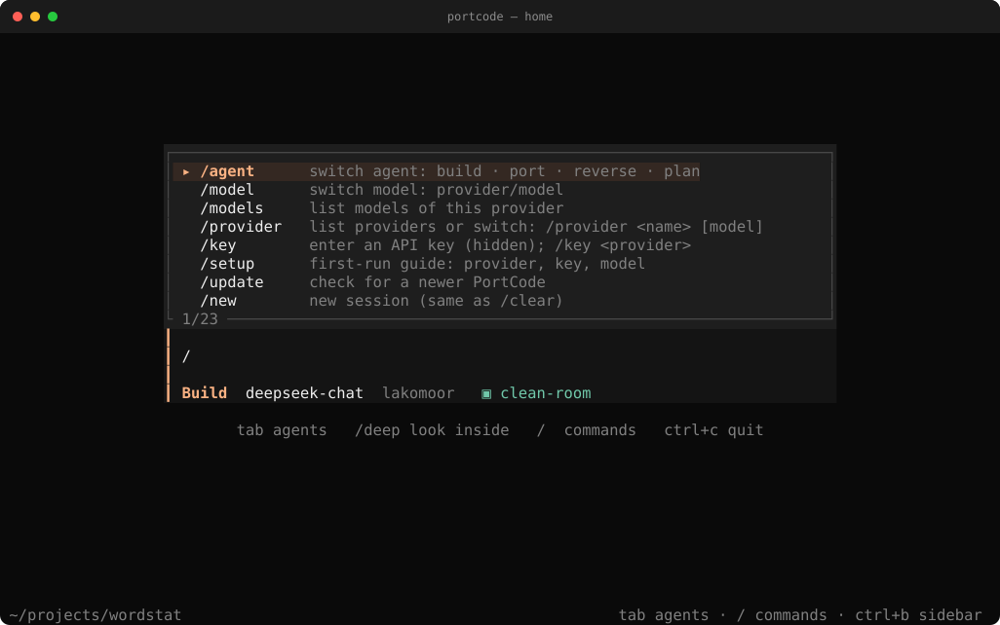
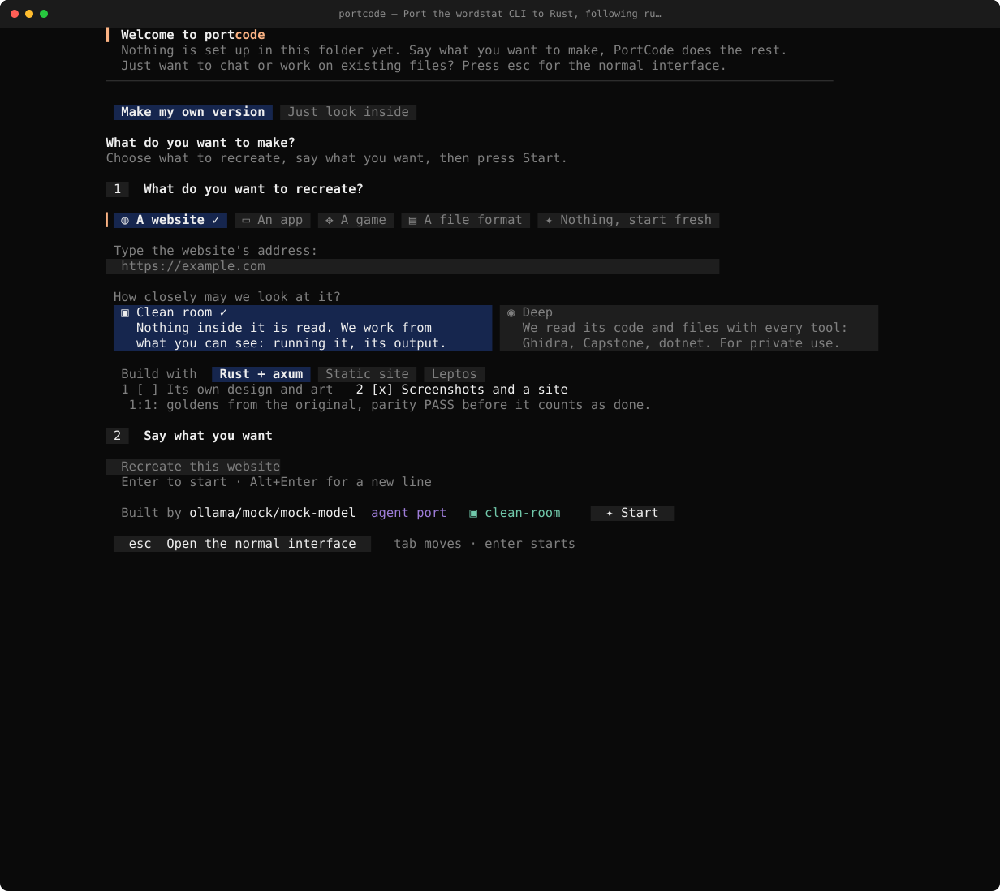
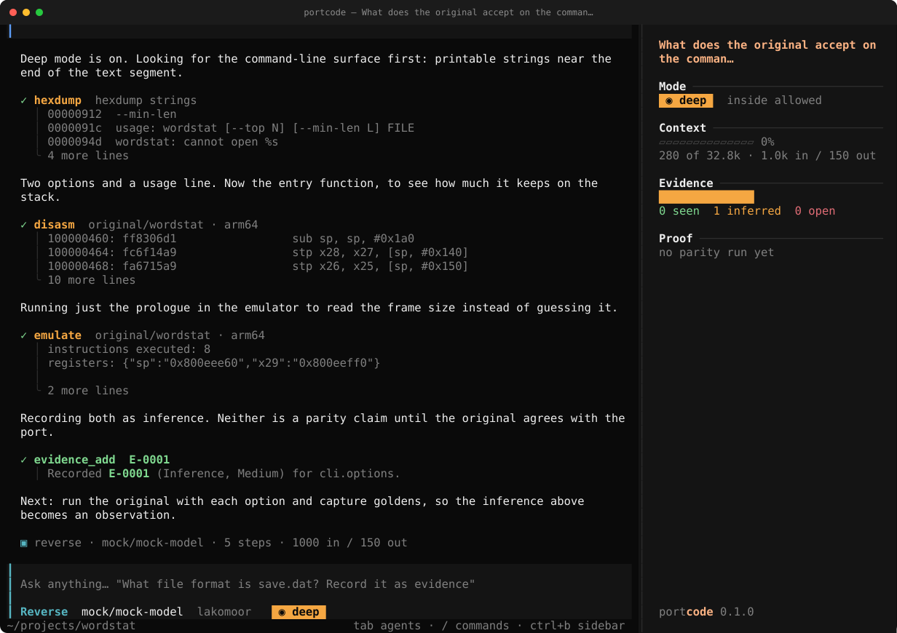
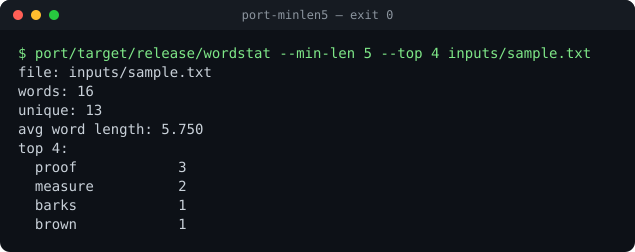
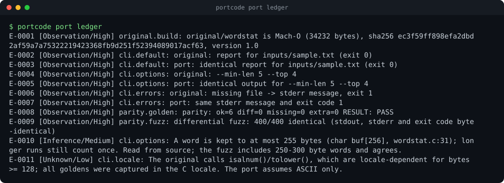
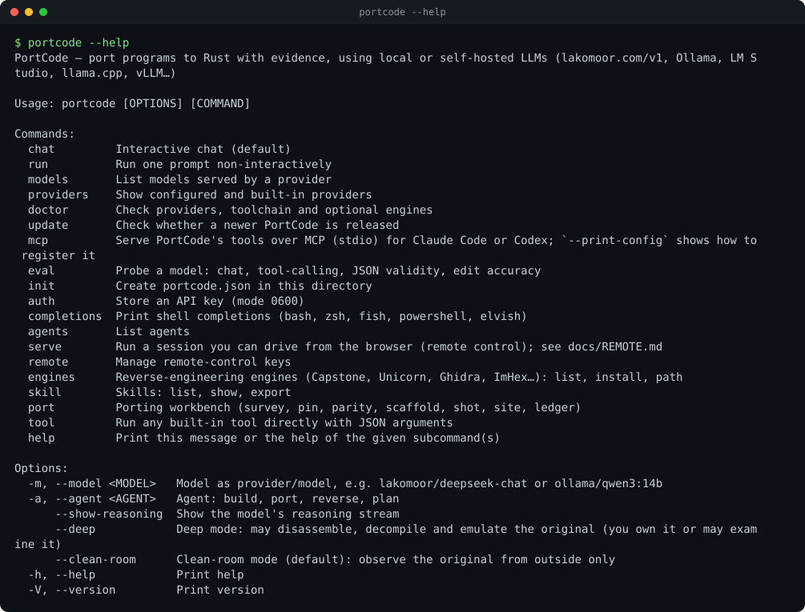

Port anything to Rust.
Show the proof.
PortCode is a terminal agent that studies an original program, records what it learns as evidence, ports it to Rust slice by slice, and proves it with golden tests, parity checks, screenshots and a generated documentation site. It talks to your models — lakomoor.com/v1, Ollama, LM Studio, llama.cpp, vLLM — not to a vendor you did not choose.

The full-screen UI running the port agent on the wordstat example. The model here is a scripted replay (portcode-mock-llm) so the run is reproducible; the UI and the tools — pin, survey, bash, parity, ledger — are real. Regenerate it yourself.
InstallOne line, checksum verified
# macOS / Linux / WSL
curl -fsSL https://raw.githubusercontent.com/LakoMoor/portcode/main/install.sh | sh
# options: PORTCODE_VERSION=v0.1.0 · PORTCODE_INSTALL_DIR=~/bin · PORTCODE_FROM_SOURCE=1 · --with-skill ~/.claude/skills · --uninstall
brew tap LakoMoor/tap && brew install portcode # Homebrew
cargo install --git https://github.com/LakoMoor/portcode portcode-cli
portcode init && portcode doctor && portcodePrebuilt: Linux and macOS, x86_64 and aarch64. The installer verifies the sha256 and falls back to a source build when no binary exists. Windows: use WSL for now.
Home

Slash commands

Permission dialog

Reverse engineeringClean-room by default, deep when you say so
In clean-room mode PortCode only observes the original from outside, and refuses disassemblers, decompilers and raw-byte tools. Switch to deep and it drives Capstone, Unicorn, Ghidra and ImHex, installed into an engines/ folder next to the binary after you approve each one.

Deep mode on the wordstat example: real hexdump, disasm and emulate calls; the model is a scripted replay.
portcode engines install core # capstone + unicorn + lief
portcode engines install ghidra imhex
portcode --deep -a reverse # then: portcode --clean-room -a portWorkflowEvidence first, code second
Study
Pin the exact build, survey the tree, trace the main loop. Static findings are labelled inference; only things you ran are observation.
Record
An append-only ledger of facts with ids (E-0007), sources, hashes and open unknowns. Every rule in the port cites one.
Port
One small slice at a time against golden outputs captured from the original — never from your reading of its code.
Prove
parity and differential fuzz decide equality. Each feature gets a screenshot, and a site is generated from plan + ledger + images.
ModelsBuilt for local and self-hosted LLMs
One OpenAI-compatible client with the quirks of open-weight models handled for you: reasoning_content and inline <think>, tool calls written as text (<tool_call>, fenced JSON), broken or truncated tool-argument JSON, quoted numbers, servers that reject optional sampling fields, stalled streams.
| Provider | Default endpoint | Key |
|---|---|---|
lakomoor | https://lakomoor.com/v1 | LAKOMOOR_API_KEY |
ollama | http://localhost:11434/v1 | — |
lmstudio | http://localhost:1234/v1 | — |
llamacpp · vllm · sglang | :8080 · :8000 · :30000 | optional |
deepseek · openrouter | hosted, same protocol | env var |
Model profiles (sampling, context window, one-tool-at-a-time, tool-output limits, prompt style) exist for the DeepSeek and Qwen families — including small and “flash” variants — and any field is overridable per model in portcode.json. Prompts are short numbered rules with a worked example and a byte-stable prefix so llama.cpp / vLLM prefix caches hit.
portcode eval against your model (chat, tool-call JSON, read→edit round-trip) and tune.$ portcode models -p lakomoor
$ portcode -m lakomoor/deepseek-chat
$ portcode -m ollama/qwen3:14b -a portAgentsSix agents, one permission model
build
Default. Implements changes end to end.
port
The rustport workflow with the porting tools. Phases with “Done when”.
reverse
Evidence-first analysis; no code edits. Uses MCP engines such as REA when configured.
plan
Read-only investigation and plan.
explore · general
Sub-agents with fresh context, called via task.
Edits and commands ask first (allow / always / deny), patterns are configurable, dangerous commands are always refused, file tools stay inside the project, shell runs with closed stdin, a deadline, capped output and whole-process-group kill.
Skillrustport — the workflow as a portable skill
The skill ships inside the binary and also works in Claude Code, Codex, OpenCode and others (portcode skill export ~/.claude/skills). It is a ~100-line router with phases, loading detail from references only when a phase needs it — the shape open-weight models follow best.
- Intake fidelity, platforms, clean-room vs deep, licence →
docs/PORT.md - Pin + survey exact build hash, inventory, unknowns recorded
- Plan module map leaves-first; rewrite / bind / drop per module
- Golden harness deterministic scenarios captured from the original
- Port core slice → test → clippy → parity; bisect, never widen tolerance
- Platform / rendering only if GUI; wgpu behind traits, offscreen PNG compare
- Prove it screenshots per feature, perf,
site_build
ProofA port you can look at

wordstat — C → Rust
Real C original, 6 golden cases, 400 random differential-fuzz runs, 11 evidence records, one open unknown.
parity 6/6fuzz 400/4001 unknown Open the generated site →

The ledger, in the terminal
portcode port ledger lists what is observed, inferred and unknown for the port above.
CLIEverything is a tool
The terminal UI, the agent and scripts call the same tools. Anything the model can do, you can run by hand with portcode tool <name> '{json}'.

| Command | What it does |
|---|---|
portcode | Interactive chat (/agent, /model, /tools, /ledger) |
portcode run "…" -a port -y --json | One-shot, scriptable, JSON-lines output |
portcode doctor · eval | Check providers/toolchain/engines · probe a model |
portcode port survey|pin|parity|scaffold|shot|site|ledger | The porting workbench, no LLM needed |
portcode skill export <dir> | Install the rustport skill into another agent |
LineageWhere this comes from
PortCode re-implements the architecture of OpenCode (agents, tools, permissions, sessions, skills, MCP) in Rust, and fuses it with the rustport skill plus ideas from Craft Anything (evidence, clean-room discipline, never-crash rules). It is a rewrite, not a fork: see the mapping for what is covered and what is not yet.